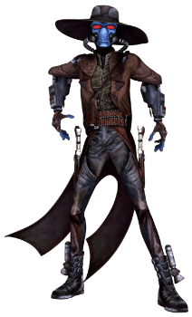

Duros

Tratti dei Duros
| Aumento dei punteggi caratteristica | Il punteggio di Destrezza aumenta di 2 e l'Intelligenza aumenta di 1 |
| Eta' | I duros raggiungono la maturita' intorno ai 20 anni e vivono fino a circa 150 anni |
| Allineamento | Neutrale |
| Taglia | Media |
| Velocita' | 9m |
| Scurovisione | Vedi 18m attraverso luce fioca come se fosse luce intensa e nell'oscurita' come se fosse luce fioca. Nell'oscurita' non vedi i colori, solo gradazioni di grigio |
| Viaggiatore Galattico | Sei competente nelle abilita' Pilotare e Storia |
| Navigatore | Sei competente nell'utilizzo degli attrezzi da geometra |
| Memoria Superiore | Puoi raddoppiare il bonus di competenza quando effettui delle prove di Intelligenza (Storia) per ricordare informazioni delle quali sei venuto a conoscenza o per ricordare i dettagli delle varie esperienze vissute |
| Resistenza alla Tecnologia | Ottieni vantaggio nei tiri salvezza su Destrezza ed Intelligenza contro i poteri tecnologici |
| Linguaggi | Sai parlare, leggere e scrivere: Galattico Base e Durese |